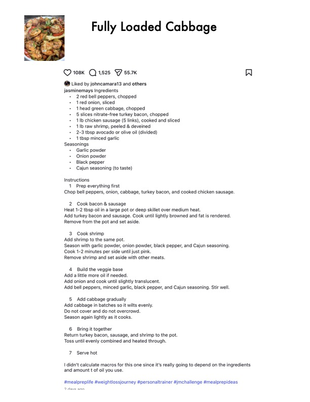

Fully Loaded Cabbage

Original cookbook page 828
Ingredients
- 1 Prep everything first
- 2 Cook bacon & sausage
- 3 Cook shrimp
- 4 Build the veggie base
- 5 Add cabbage gradually
- 6 Bring it together
- 7 Serve hot
- 9 dave ann
Instructions
- Prep everything first Chop bell peppers, onion, cabbage, turkey bacon, and cooked chicken saus:
- Cook bacon & sausage Heat 1-2 tbsp oil in a large pot or deep skillet over medium heat. Add turkey bacon and sausage. Cook until lightly browned and fat is rendere Remove from the pot and set aside.
- Cook shrimp Add shrimp to the same pot. Season with garlic powder, onion powder, black pepper, and Cajun seasonin Cook 1-2 minutes per side until just pink. Remove shrimp and set aside with other meats.
- Build the veggie base Add a little more oil if needed. Add onion and cook until slightly translucent. Add bell peppers, minced garlic, black pepper, and Cajun seasoning. Stir we
- Add cabbage gradually Add cabbage in batches so it wilts evenly. Do not cover and do not overcrowd. Season again lightly as it cooks.
- Bring it together Return turkey bacon, sausage, and shrimp to the pot. Toss until evenly combined and heated through.
- Serve hot I didn't calculate macros for this one since it's really going to depend on the and amount t of oil you use. #mealpreplife #weightlossjourney #personaltrainer #jmchallenge #mealprep 9 dave ann
Recipe #828 from collection